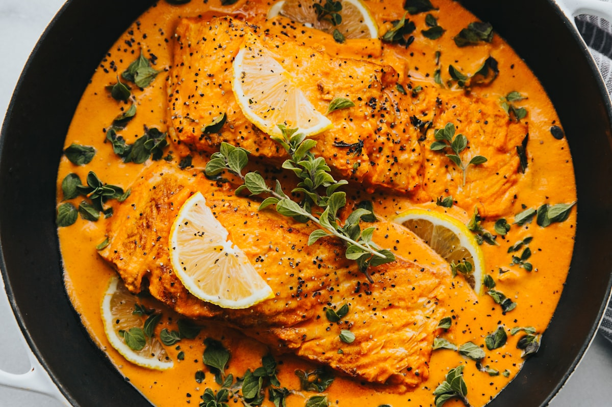
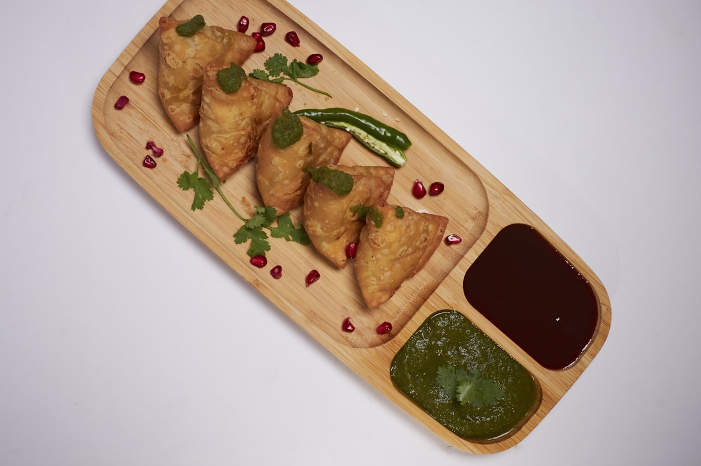

A Tradition Rooted in Ayurveda and Sensory Connection
According to Ayurvedic philosophy, each finger represents one of the five elements: thumb for fire, index finger for air, middle finger for space, ring finger for earth, and pinky for water. When all five fingers touch food, it is believed that the body's energy aligns with the meal, preparing the digestive system before the first bite even reaches the mouth. The tactile experience — feeling the warmth of freshly made roti, the soft texture of rice mixed with curry — activates nerve endings that send signals to the stomach, aiding digestion.
This is not superstition. Modern research confirms that eating with hands engages more senses simultaneously, leading to greater mindfulness during meals. In a world where people eat while scrolling their phones, the Indian practice of hand-eating forces you to be fully present with your food.

The Family Table: Where Generations Connect Over Food
In Indian households, mealtime is sacred. Families gather together, often eating from shared dishes. Mothers serve food onto individual plates (thalis), but the act of eating together — using the same gestures, the same hand movements — creates a shared ritual that binds generations. Grandparents teach children how to properly mix rice and dal, how to tear naan at just the right angle, and how to use only the fingertips (never the palm) to keep things clean.
For Indian families living in Taichung, this tradition is especially meaningful. Far from their homeland, the simple act of eating with hands becomes a way to preserve identity, teach children about their heritage, and maintain a connection to home that no utensil can replicate.
Regional Variations Across India
Hand-eating customs vary widely across India. In South India, meals are traditionally served on banana leaves. Diners mix rice with sambar, rasam, and various chutneys directly on the leaf, creating personalized flavor combinations with each bite. In North India, bread-based meals (roti, naan, paratha) naturally lend themselves to hand eating — you tear a piece, use it to pinch some curry, and eat the entire combination in one satisfying motion.
In Gujarat and Rajasthan, the tradition of eating with hands extends to elaborate thali meals with dozens of small dishes, each designed to be mixed and matched according to personal taste. The hand becomes not just a utensil but a tool of creative expression at the table.

What This Means for You in Taichung
At Baba Indian Restaurant, we welcome guests to eat however they feel comfortable. We always provide cutlery. But if you want to try the authentic experience, here are some tips: always use your right hand, use only your fingertips (not your entire palm), and tear bread into small pieces before scooping curry. Start with something easy like butter naan dipped in butter chicken — you will immediately understand why this method makes food taste better.
Many of our Taiwanese guests who try hand-eating for the first time tell us they feel more connected to the food. The temperature, texture, and moisture of each ingredient become part of the experience. It transforms a meal from mere consumption into something intimate and memorable.
More Than a Meal — A Way of Life
Eating with hands in India is not about convenience or poverty. It is a conscious choice that reflects values: respect for food, connection to the body, and the importance of shared family rituals. In a fast-paced city like Taichung, where many of us eat alone at our desks, the Indian tradition of hand-eating reminds us that meals were meant to be experienced fully — with all five senses, surrounded by the people we love.